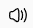

公告
公告内容
常用工具
推荐
-
海边
浪白丝云雾
-

落日
长河落日圆
-
礁石
东临碣石，以观沧海
-

波浪
木落雁嗷嗷，洞庭波浪高
热点时事
《水浒传》是中国历史上第一部用古白话文写成的歌颂农民起义的长篇章回体版块结构小说，以宋江领导的起义军为主要题材，通过一系列梁山英雄反抗压迫、英勇斗争的生动故事，暴露了北宋末年统治阶级的腐朽和残暴，揭露了当时尖锐对立的社会矛盾和“官逼民反”的残酷现实。按120回本计，前70回讲述各个好汉上梁山，后50回主要为宋江全伙受招安为朝廷效力，以及被奸臣所害。
《三国演义》是中国古典四大名著之一，全名为《三国志通俗演义》。作者是元末明初小说家罗贯中，是中国第一部长篇章回体历史演义小说。描写了从东汉末年到西晋初年之间近105年的历史风云。全书反映了三国时代的政治军事斗争，反映了三国时代各类社会矛盾的转化，并概括了这一时代的历史巨变，塑造了一批叱咤风云的三国英雄人物。
《西游记》是中国古典四大名著之一，是由明代小说家吴承恩所创作的中国古代第一部浪漫主义的长篇神魔小说。主要描写了唐朝太宗贞观年间孙悟空、猪八戒、沙僧、白龙马四弟子保护唐僧西行取经，沿途历经九九八十一难，一路降妖伏魔，化险为夷，最后到达西天，取得真经的故事。取材于《大唐三藏取经诗话》和汉族民间传说。 [1]
《红楼梦》，中国古典四大名著之首，清代作家曹雪芹创作的章回体长篇小说[1] 。早期仅有前八十回抄本流传，八十回后部分未完成且原稿佚失。原名《脂砚斋重评石头记》。程伟元邀请高鹗协同整理出版百二十回全本[2] ，定名《红楼梦》。亦有版本作《金玉缘》。
向你推荐
所有活动 >
内容一
内容一
内容一